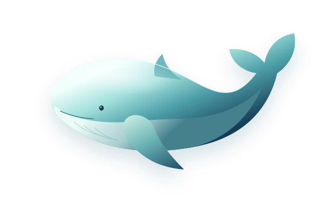

01 / 持续记忆
你随口说的，
她放在心上。
私聊里的小偏好，群聊中的共同话题。
通过事实记忆与历史摘要，让对话有迹可循。
A LITTLE WHALE. A REAL CONNECTION.
不止回答你的问题。
记住你的日常，接住你的情绪，偶尔还会和你斗嘴。
认识鲸鲸，你的开源 AI 微信伙伴。

DESIGNED TO CONNECT · BUILT TO REMEMBERA CONNECTION THAT GROWS
一个回应，一段对话。
让平常的日子，多一个可以分享的伙伴。
把你说过的小事，连成对话的线索。
下一次见面，不必重新认识。
有自己的个性，也有恰到好处的分寸。
这就是鲸鲸想带给你的日常。
MORE THAN A CHATBOT
好的陪伴，不必每句都很厉害。
懂得什么时候接话，什么时候安静，就很好。
私聊里的小偏好，群聊中的共同话题。
通过事实记忆与历史摘要，让对话有迹可循。
短句、有情绪、有自己的说话节奏。
让聊天多一点灵气，少一点机械感。
按需联网搜索，关注热榜与新鲜事。让话题从日常，延伸到更大的世界。
支持 DeepSeek、GLM、Qwen 与本地 Ollama。通过桌面启动器，管理你的鲸鲸。
THE NEXT CHAPTER
新增完整的隐私政策，说清数据如何留在本机、何时对外发送。对话记忆可以按会话单独清理，启动器也会在发现新版时安静提醒。
根据仓库 4.0.6 更新记录整理；实际发行内容以 Releases 为准。
RECENT RELEASES
最近三个发行版本4.0.2–4.0.4 未单独发版，内容已并入 4.0.5。
OPEN BY NATURE
Whale Girl 是一个开源 AI 微信陪伴项目。以蓝发鲸鱼娘为人设，连接兼容 OpenAI 接口的模型，用桌面启动器管理对话、记忆和日常功能。
图标原创角色作者：上善无形；本项目图标为二创作品。